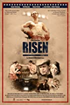

Film Reviews - Risen
Welcome to my film reviews page ...
There was a good atmosphere in the audience at the start of this film as it was introduced by Stuart Brennan
who plays the lead role in the film, the part of Howard Winstone, with the promise of a Q & A session after the
film with director Neil Jones and Stuart Brennan.
RISEN by director Neil Jones, and written by Jones and Stuart Brennan, is the moving, true story of the rising
talents of an the young boxer Howard Winstone (later to become an MBE), the boy from Merthyr Tydfil in Wales, who
was rapidly rising the amateur featherweight ranks as a fighter of some standing with a fearsome right hand,
The future beckoned great things for young Howard until a tragic accident in his workplace that saw him lose the
top half of three of the fingers on his right hand, but, even such a cruel twist of fate was merely a temporary set
back for Howard, who, when goaded on by his parents, teamed up with boxing trainer Eddie Thomas (himself a former
European Welterweight champion) who taught him an alternative way to fight, so that he could still compete in the boxing ring.
Through sheer guts, and determination, and using his new fighting style Howard continued to be successful, being
unbeaten in 6 years and winning 83 out of 86 amateur matches. Howard soon turns professional and after another 24 straight wins,
he gets a shot at the British Featherweight title against Terry Spinks, which he wins and then goes onto be champion of Europe.
Soon, the next big hurdle is the Featherweight Championship of the World ...
What makes this film stand out is the performances of the characters in the leading roles – Stuart Brennan is excellent as
Howard Winstone, John Noble is very convincing as the trainer Eddie Thomas, and Grainne Joughin as Howard's Wife Bennita
there are some fine performances all round by a very well chosen cast.
I declare now, that I am not really a fan of boxing – but this film has a lot more to it than that it shows remarkable courage,
determination against tremendous odds and set-backs, it has some quite emotional sequences – even during "the thick of the action"
my favourite stand-out scene was during the third World title fight against Vicente Saldivar – when the world, the crowd and
everything else just seemed to fade away, leaving just two giants of the ring slugging it out in slow motion with a backing track
of Beethoven's moonlight sonata ... it was really quite an emotive scene ...
The direction was sensitive to the subject matter (the Director also hails from Merthyr Tydfil in Wales) the scenery and ambiance
was great, music, acting all pretty accomplished.
In the Q & A session after the film, we met, listened to, and asked questions of Director Neil Jones and Stuart Brennan, who both
wrote the screenplay, they were very open to questions and they told us of the difficulties (mostly due to funding) of making this
five year labour of love, and it was obvious to all there the passion that these guys had for this film and the subject matter, and
it certainly shows through in the finished result. The fight scenes were really quite intimate as well with some very close up camera
action – and we're assured that the actors really did make contact on several occasions – they weren't just acting ... and some of that
blood was real!
I would recommend RISEN to fight fans and for those that would want to see a really well told biopic of a truly courageous, and
remarkable man Howard Winstone MBE.
RISEN is 90mins long, is a 12A certificate and will be on general release from May 2011